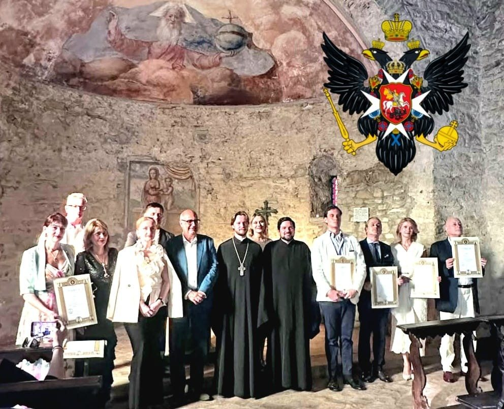
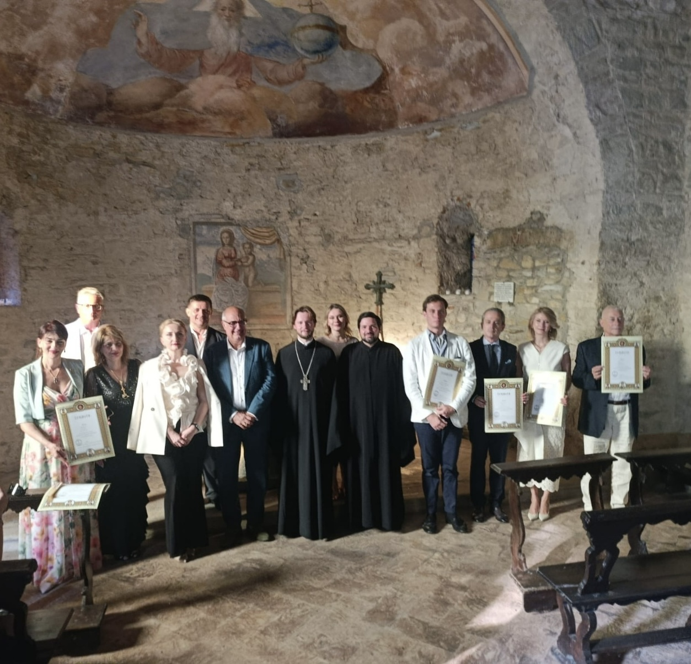
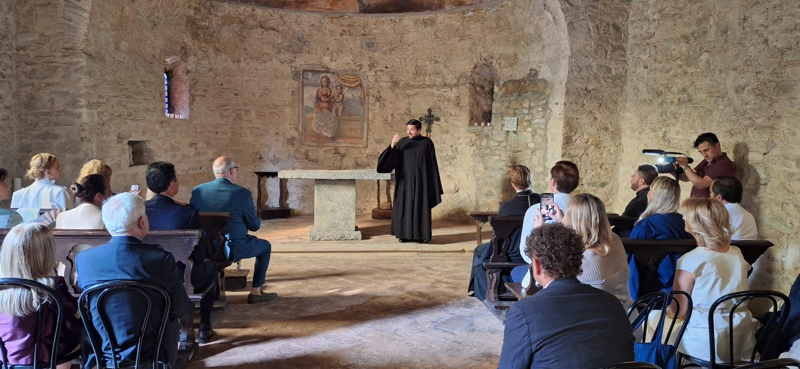
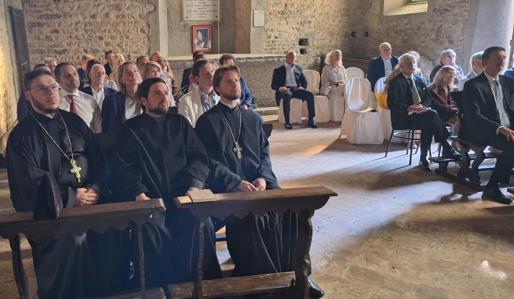
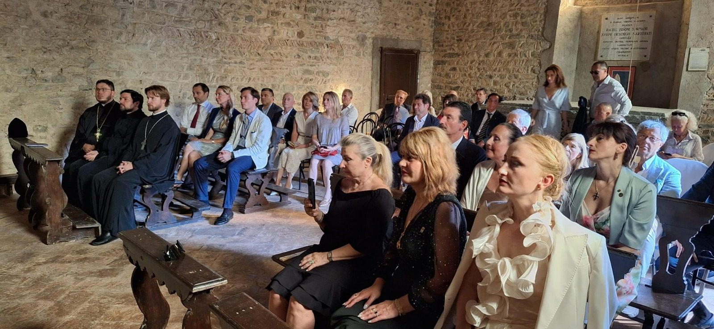
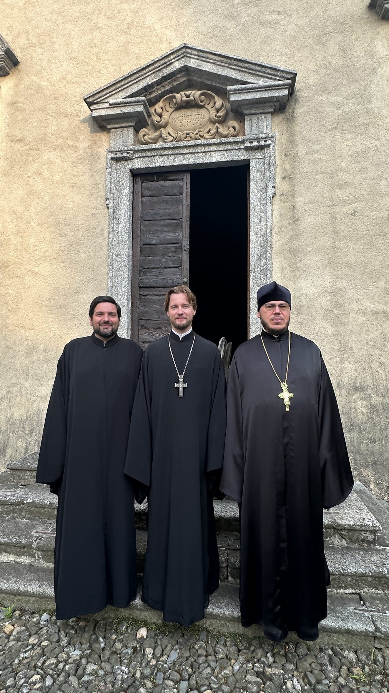
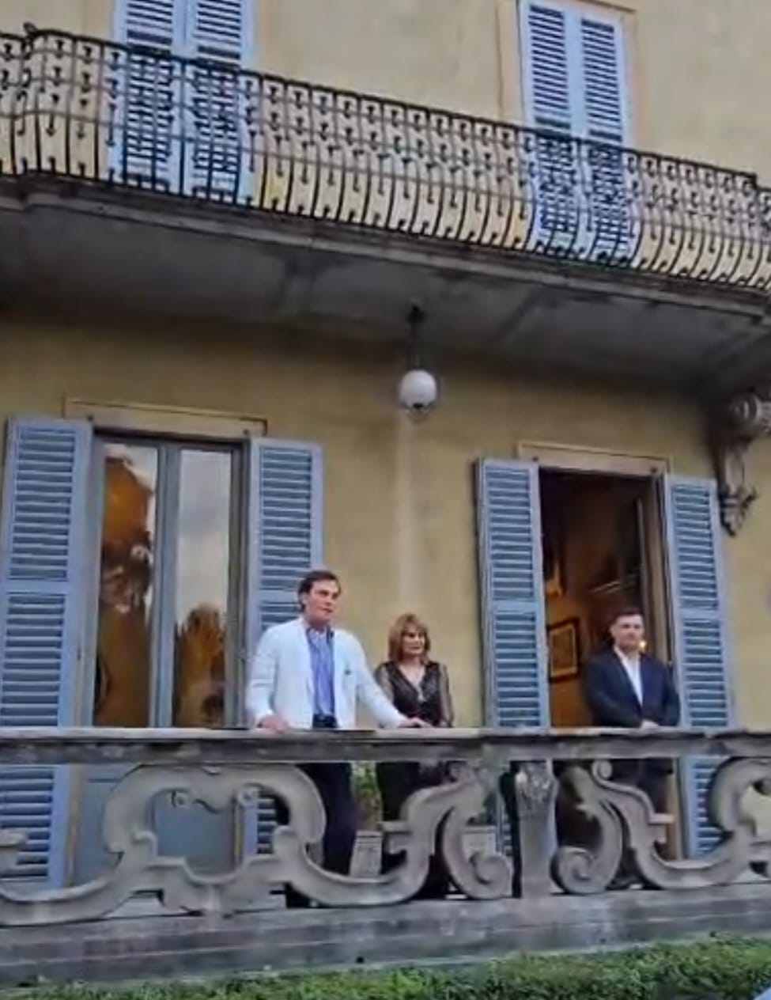
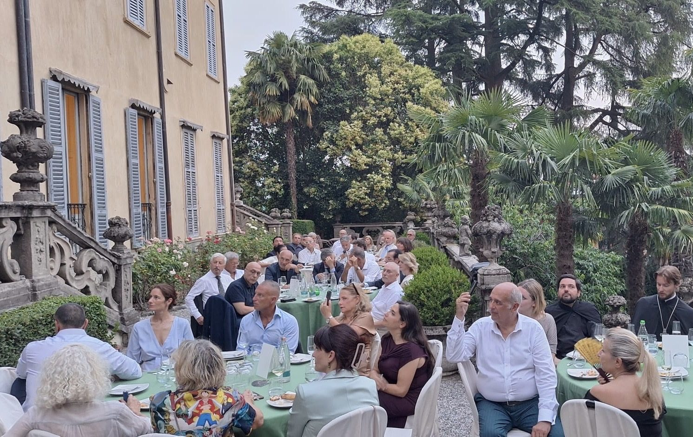
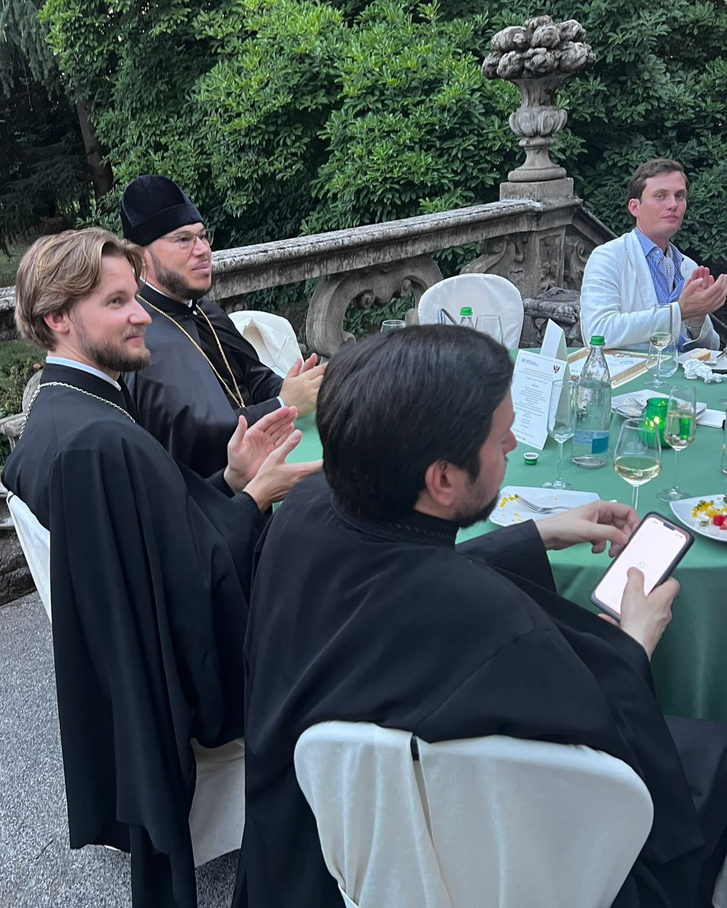

Il 26 giugno 2026, in occasione della visita dello Ieromonaco Ambrogio Matsegora, Vicario generale della Chiesa Ortodossa Russa del Patriarcato di Mosca in Italia, presso Villa Sormani Marzorati Uva di Missaglia, in Brianza, si e svolta una cerimonia nel corso della quale la Metropolia dell'Europa Occidentale ha conferito attestati di benemerenza a un gruppo di personalita italiane e straniere, cattoliche e ortodosse, per meriti culturali e sociali, fra cui alcuni soci e simpatizzanti del nostro Circolo. Altre benemerenze sono state consegnate dalla Principessa Silvia Andronik Cantacuzino, ospite d'onore della serata. La cerimonia era organizzata dalla Confraternita Cavalleresca Imperiale Russa Ortodossa di San Giovanni di Gerusalemme e di Malta, con l'attiva partecipazione del nostro Circolo.
Padre Ambrogio era accompagnato dal segretario padre Adriano, priore della confraternita organizzatrice, e da padre Vasilij, parroco della comunita ortodossa russa di Saronno. Erano presenti circa un centinaio di persone, fra cui autorita civili, militari e diplomatiche.
La cerimonia e stata seguita da una visita guidata alla villa, edificio di origini risalenti all'epoca romana e oggetto di successive trasformazioni nel corso dei secoli. Il conte Alberto Uva ne e l'attuale proprietario e promotore di iniziative culturali legate alla storia del territorio brianzolo.
Fotografie della cerimonia








